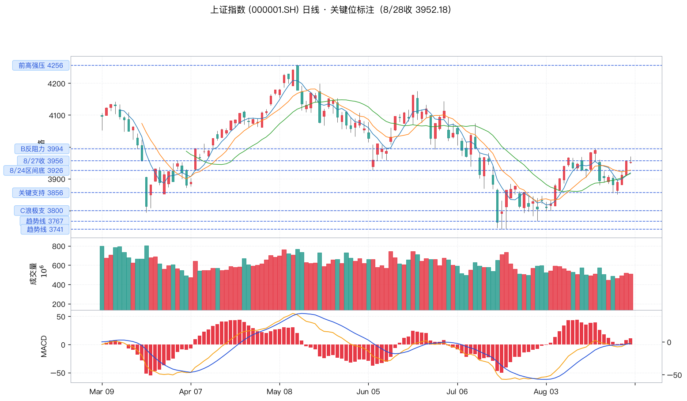
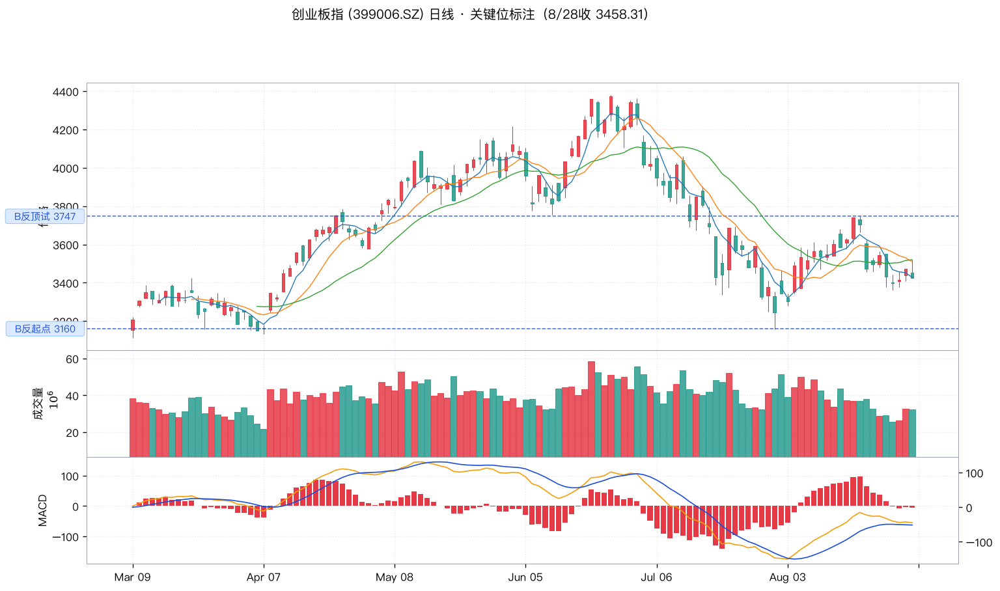
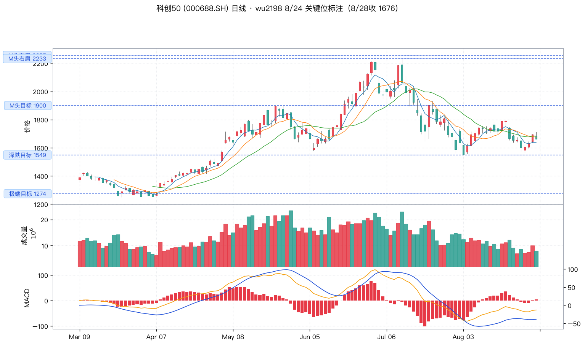
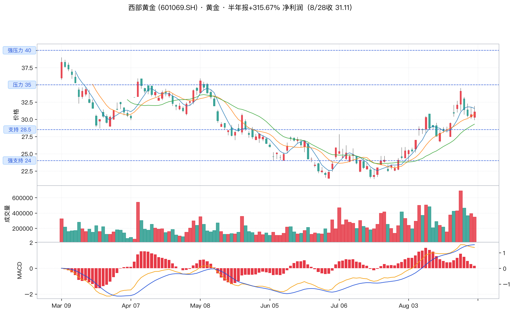
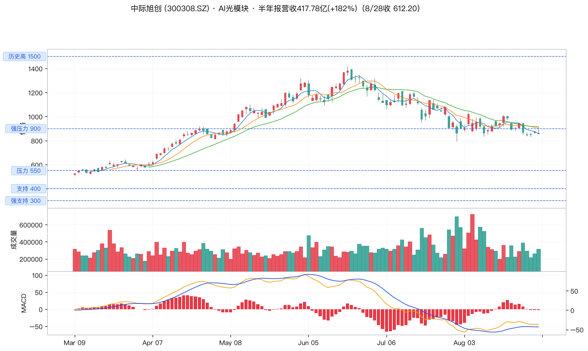
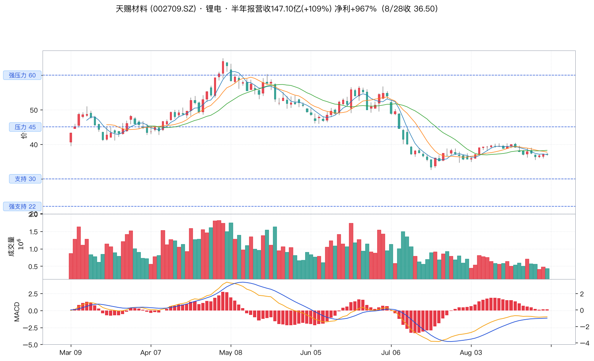
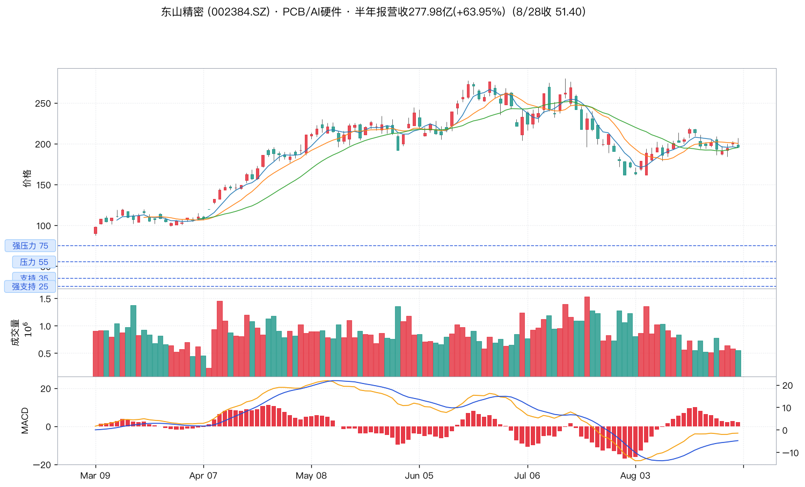
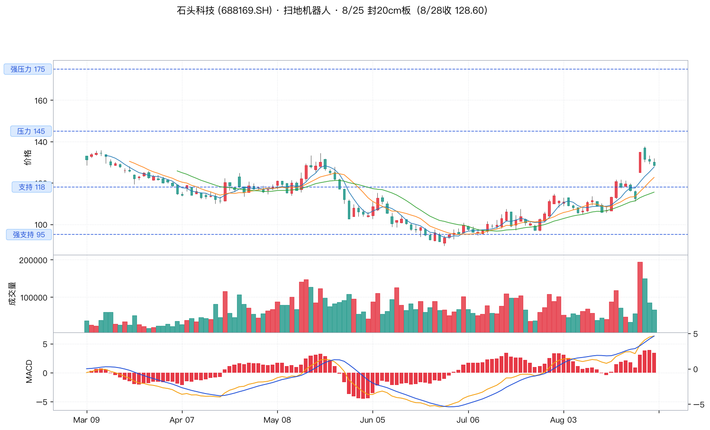
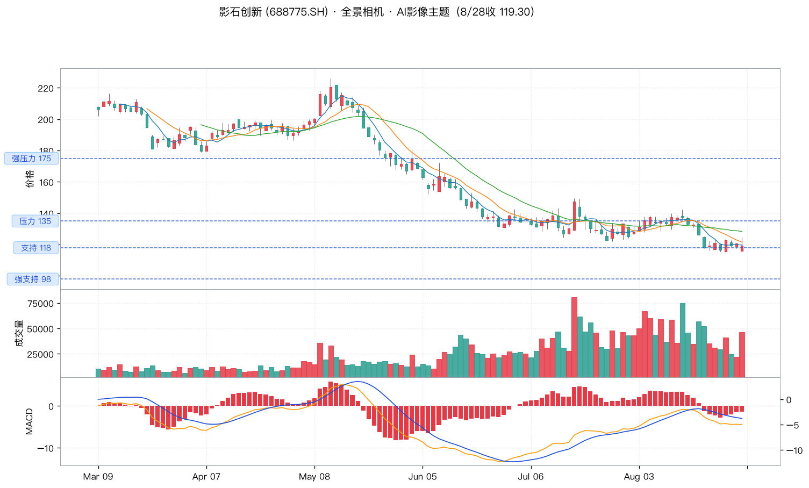

注：wu2198 在周末（8/29-8/30）仅发问候/热点转发，无 A 股投资观点；以下为最近一个交易周（8/24-8/28）的核心信号。
关键位虚线标注，标签居左；下方依次为成交量、MACD 指标。数据来源：tushare (2026-02-01 ~ 2026-08-30)。



代表事件：8/24 西部黄金（601069.SH）半年报：营收 110.43 亿元（+119.62%），净利润 5.47 亿元（+315.67%）；wu2198 8/24 转发并点评。
投资逻辑：
关注：西部黄金（601069）、湖南黄金、莱绅通灵；金 ETF 工具更稳。
代表事件：8/24 博主原话："按短线看，今天只有电池材料板块资金活动是明显的。" 8/24 电池材料和锂矿有 4 只冲板（"有只连拉 2 个板，也有 20 厘米的"）。
投资逻辑：
关注：天赐材料（002709）、亿纬锂能（300014）、德福科技（铜箔）；锂电 ETF 工具覆盖度更佳。
代表事件：8/25 扫地机器人龙头封 20cm 板（石头科技 688169.SH），全景相机龙头、投影仪龙头同步上涨。
投资逻辑：
关注：石头科技（688169）、影石创新（688775）、科沃斯（603486）。
催化：8/24 半年报：营收 110.43 亿（+119.62%），净利 5.47 亿（+315.67%）；拟每 10 股派现 0.5 元（含税）
关键位： 压力 35.0强压力 40.0支持 28.5强支持 24.0
技术面：MACD 零上金叉，底部反转形态确立；8/29 伦敦金 -2.95% 是短期回调风险点，关注 28.5 关键支持。

催化：8/21 半年报：营收 417.78 亿（+182.49%），净利 136.51 亿（+241.7%）；拟每 10 股派现 12 元（含税）
关键位： 历史高 1500强压力 900压力 550支持 400强支持 300
技术面：MACD 死叉后低位钝化，调整接近尾声；8/27-8/28 英伟达财报催化+ 8/28 兑现式回调的双重影响下，处于筑底阶段。
关注事件：山西证券、西部证券等 8 月金股推荐；港股 IPO 后 A 股折价压制因素有望解除。

催化：8/20 半年报：营收 147.10 亿（+109.28%），归母净利 28.61 亿（+967.91%）；拟每 10 股派现 1 元（含税），上市以来首次中期分红
关键位： 强压力 60.0压力 45.0支持 30.0强支持 22.0
技术面：MACD 死叉后绿柱缩短，5/10/20 日均线粘合，等待方向选择；下半年排产旺季+电解液涨价，业绩持续兑现。

催化：8/21 半年报：营收 277.98 亿（+63.95%），归母净利大幅增长；wu2198 8/21 转发点评
关键位： 强压力 75.0压力 55.0支持 35.0强支持 25.0
技术面：MACD 零轴附近金叉，量价配合；8/28 半导体/CPO 兑现式回调，短期回避，回调企稳后低吸。
关注事件：8/28 后关注 AI 算力链（存储/CPO/光通信/PCB/光纤/PTFE 材料）修复机会。

催化：8/25 扫地机器人龙头封 20cm 板（wu2198 亲点）；海外市场份额持续提升
关键位： 强压力 175.0压力 145.0支持 118.0强支持 95.0
技术面：MACD 底部金叉，量能配合；技术形态优于大盘；118.0 是关键支持位。

催化：8/25 全景相机龙头上涨，AI/影像主题持续；wu2198 关注
关键位： 强压力 175.0压力 135.0支持 118.0强支持 98.0
技术面：MACD 底部反弹，站稳 118.0 才能确认上行；与石头科技节奏相近。

| 类型 | 点位 | 说明 |
|---|---|---|
| 强压力 | 4256 | 年初目标（已实现后回吐，第四大浪高点） |
| 压力 | 3994-3996 | 小波段前高 / 阻力（8/24 试 3994.18） |
| 区间顶 | 3956 | 3856-3926-3956 震荡区间 |
| 区间底 | 3926 | 同上 |
| 关键支持 | 3856 | 多空分水岭（8/24 试 3855.35） |
| 阶段低 | 3850 | 8/25 抵抗点 |
| 极端支持 | 3800 | 破 3856 后考验 |
| 趋势线 | 3767 / 3741 | C 浪下探目标 |
| 类型 | 点位 | 说明 |
|---|---|---|
| B 反顶 | 3747.53 | wu2198 8/24 提示的实际高点 |
| B 反起点 | 3160 | wu2198 8/24 提示的 B 反起点 |
| 类型 | 点位 | 说明 |
|---|---|---|
| M 头左肩 | 2255 | 冲高后急跌到 1913 |
| M 头右肩 | 2233 | 8/24 早盘冲高试 2233 转绿 |
| M 头目标 | 1900 | 多空转折点，8/24 试 1900 |
| 深跌目标 | 1549 | "第一步是到了 1549 点" |
| 极端目标 | 1274 | "破位的话，要到 1274 点左右才会有强的反弹" |
| 代码 | 名称 | 行业 | 现价 (8/28) | 强支持 | 支持 | 压力 | 强压力 |
|---|---|---|---|---|---|---|---|
601069.SH |
西部黄金 | 黄金 | 31.11 | 24.0 | 28.5 | 35.0 | 40.0 |
300308.SZ |
中际旭创 | AI 光模块 | 612.20 | 300 | 400 | 550 | 900 |
002709.SZ |
天赐材料 | 锂电解液 | 36.50 | 22.0 | 30.0 | 45.0 | 60.0 |
002384.SZ |
东山精密 | PCB / AI 硬件 | 51.40 | 25.0 | 35.0 | 55.0 | 75.0 |
688169.SH |
石头科技 | 扫地机器人 | 128.60 | 95.0 | 118.0 | 145.0 | 175.0 |
688775.SH |
影石创新 | 全景相机 | 119.30 | 98.0 | 118.0 | 135.0 | 175.0 |
| 优先级 | 动作 | 触发条件 | 目标 |
|---|---|---|---|
| P0 | 检查持仓 vs 上证 8/28 表现 | 若持仓跑输指数 | 主动调仓到主线（黄金/锂电/智能制造） |
| P0 | 关注 3856 开盘表现 | 3856 失守 | 减仓至 3-4 成，观望 C 浪下探 |
| P1 | 黄金股短线减仓 | 伦敦金继续下跌 / 西部黄金跌破 28.5 | 锁定半年报行情利润 |
| P1 | AI 算力硬件等企稳 | 缩量回踩 5 日线不破 + 前排龙头翻红 | 小仓低吸中际旭创 / 东山精密 |
| P2 | 智能制造低吸 | 石头 / 影石回踩 118.0 不破 | 配置仓位 1-2 成 |
| P2 | 锂电材料波段 | 天赐回踩 30.0 不破 | 配置仓位 1 成 |
| P3 | 回避半导体/CPO 高位兑现 | 8/28 后连续放量阴线 | 等缩量企稳再观察 |